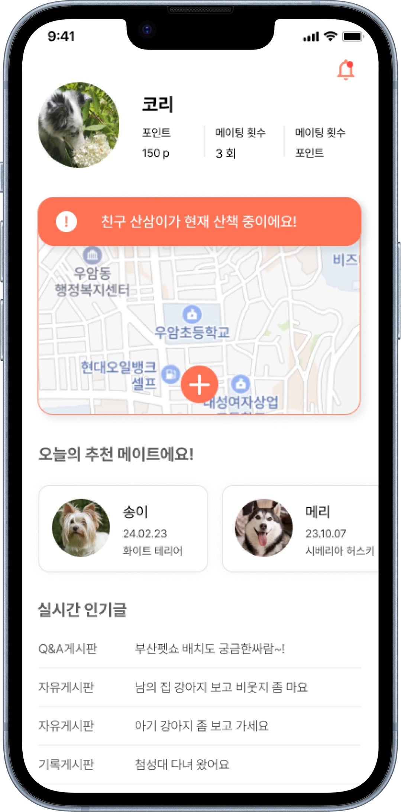
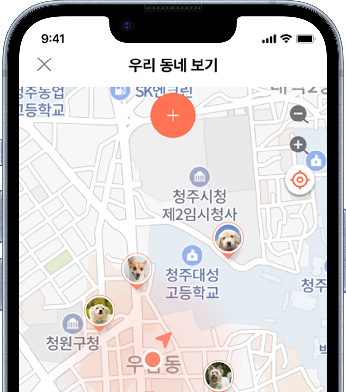
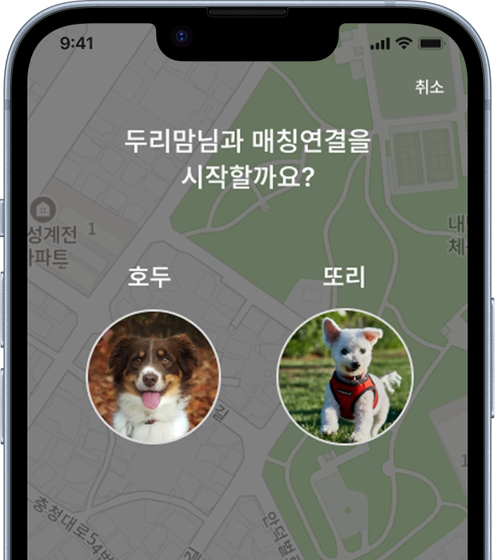
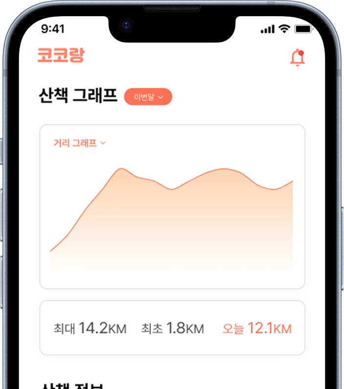
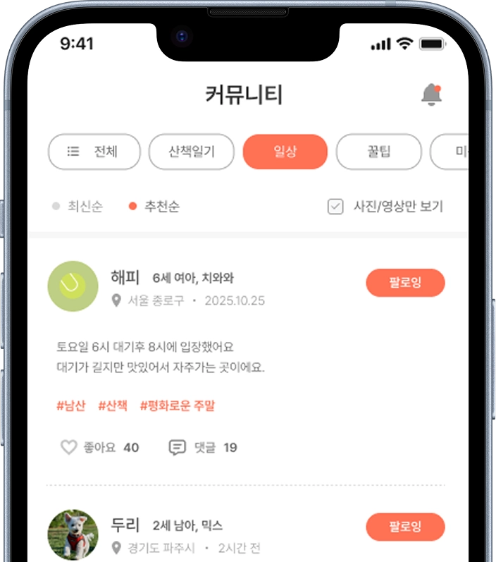
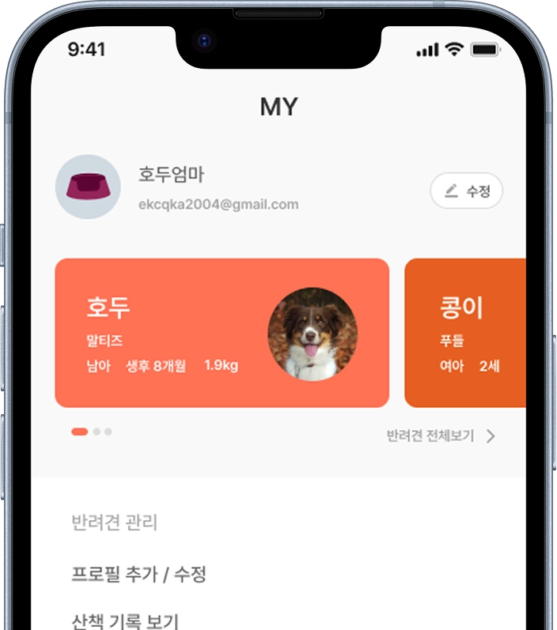

코코랑은 반려견과 보호자가
산책 중 자연스럽게 교류할 수 있도록 돕는
동네 기반 반려견 커뮤니티 서비스입니다.
상대 반려견의 성향과 교류 의사를 미리 확인하고,
실시간 위치 정보를 통해 주변 반려견을 탐색할 수 있어
보다 안전하고 편안한 만남을 지원합니다.
산책 친구를 찾고, 추억을 기록하며
우리 동네 이야기를 나눠보세요.
주변에서 산책 중인 반려견을 실시간으로 확인할 수 있습니다.

성향과 교류 의사를 기반으로 함께 산책할 친구를 추천합니다.

산책 거리와 활동 내역을 기록하고 반려견의 성장 과정을 확인합니다.

산책 후기와 지역 정보를 공유하며 동네 반려인과 소통할 수 있습니다.

반려견의 성향과 활동 기록을 한곳에서 편리하게 관리할 수 있습니다.
